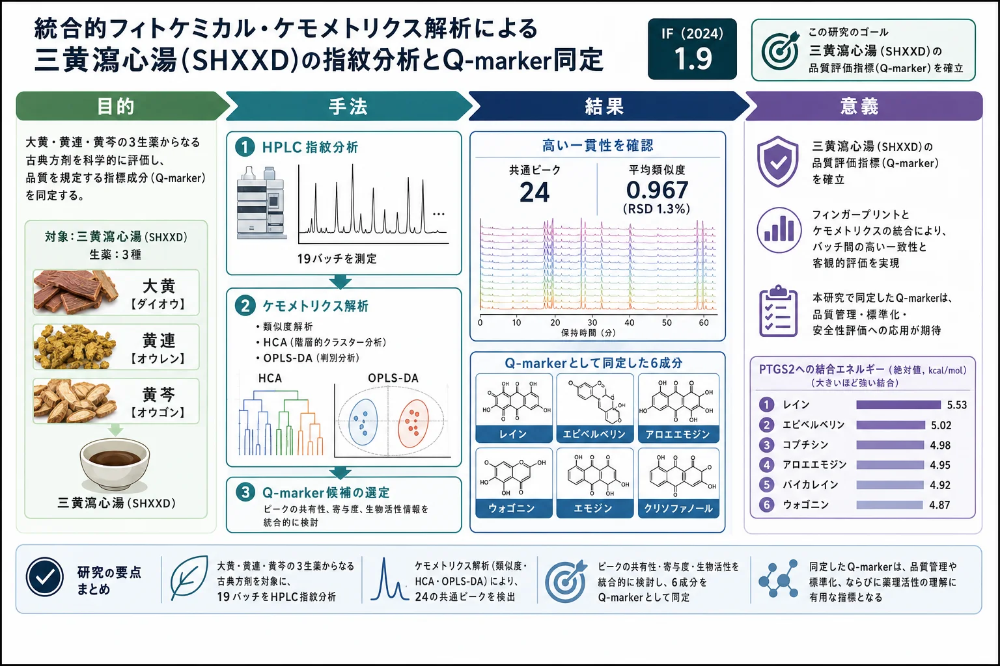
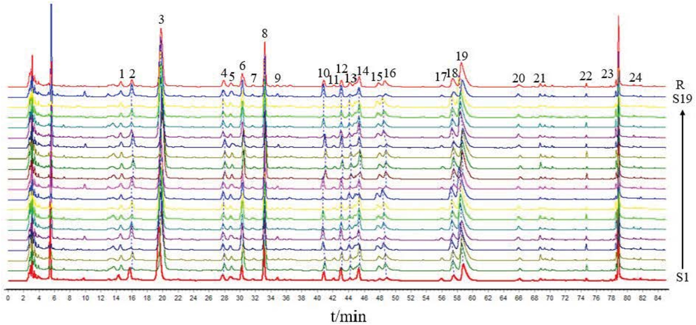
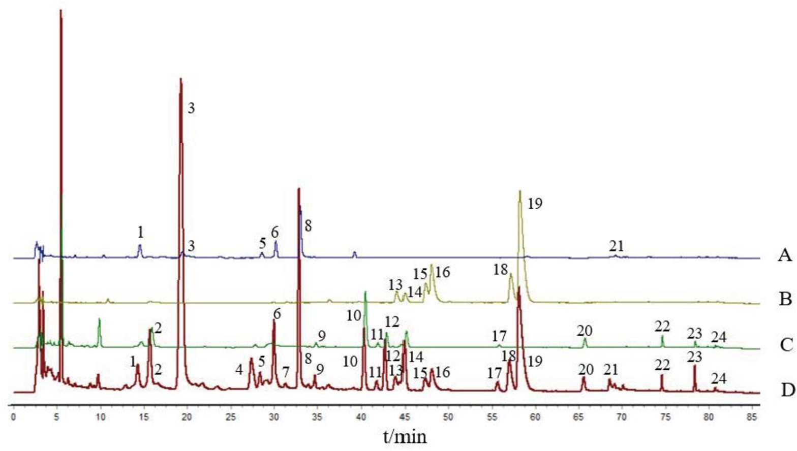
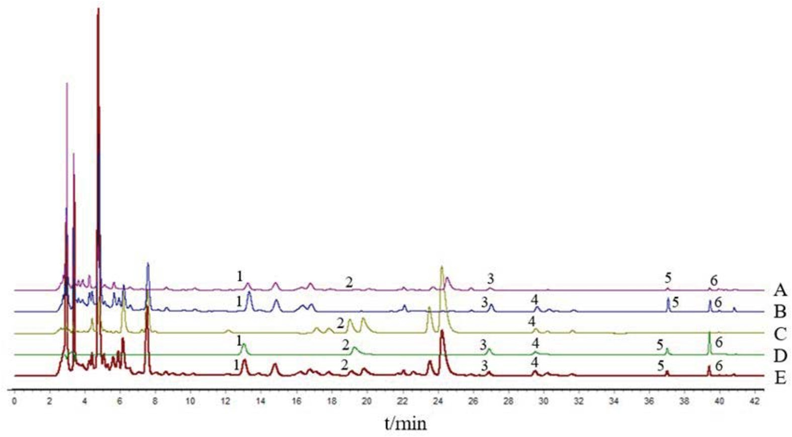

統合的フィトケミカル・ケモメトリクス解析による三黄瀉心湯(SHXXD)の指紋分析とQ-marker同定

<!-- 方針: ほぼ全訳＋必要に応じた補足。原文構成に沿って訳出。「> 補足:」は訳者注。 -->
書誌情報
- 原題: Fingerprint Analysis and Quality Marker Identification of Sanhuang Xiexin Decoction Based on Integrated Phytochemical and Chemometric Approaches
- 著者: Jingju Fu, Xinyi Li, Yukun Wang, Xue Dong（山東中医薬科学院, 中国。責任著者 Xue Dong）
- 掲載: Biomedical Chromatography 2026; 40: e70477. https://doi.org/10.1002/bmc.70477
- インパクトファクター: 1.9（Biomedical Chromatography, JCR 2024 / Clarivate）
- 受理経過: 受領 2026-03-12 / 改訂 2026-04-10 / 採録 2026-04-21
補足: SHXXD = 三黄瀉心湯（Sanhuang Xiexin Decoction。金匱要略収載。大黄 Rheum palmatum・黄連 Coptis chinensis・黄芩 Scutellaria baicalensis の3生薬からなる）。Q-marker = 品質マーカー。OPLS-DA = 直交部分最小二乗判別分析、HCA = 階層クラスタリング。本論文は分析法開発＋ケモメトリクス＋in silico解析の研究論文。
要旨（Abstract）
三黄瀉心湯(SHXXD)は長い臨床応用の歴史をもつ古典的漢方方剤だが、体系的なフィトケミカル特性化と信頼できる品質評価戦略が不十分である。本研究は、統合的フィトケミカル解析とケモメトリクスにより、SHXXDの指紋に基づく品質評価法を確立し代表的Q-markerを同定することを目的とした。HPLC指紋とケモメトリクスでバッチ間の化学的一貫性を評価。クロマト挙動・特異性・相対存在量に基づき潜在的Q-markerをスクリーニング。再現性ある指紋が得られ、バッチ間で高い類似度を示した。6成分 を潜在的Q-markerとして同定(良好な分離・安定した定量プロファイル)。ケモメトリクスで全体の化学的特徴に寄与する特徴ピークを効果的に判別。確立したHPLC指紋＋Q-markerスクリーニングは、SHXXDの品質管理・標準化に実用的で信頼できる分析戦略を提供する。
1. 序論（Introduction）
SHXXDは金匱要略収載の古典方剤で、Rheum palmatum(大黄)・Coptis chinensis(黄連)・Scutellaria baicalensis(黄芩)からなる。多生薬の複雑な化学組成が系統的な特性化を困難にしている。Q-markerは漢方の品質管理の体系的枠組みとして提唱され、その信頼性ある選定には確実な分析的検出が必要。本研究は類似度評価とOPLS-DAで特徴ピークを抽出し、ネットワーク薬理・分子ドッキングで候補Q-markerを優先順位付けした(虚血性脳卒中ISの文脈で実施)。
2. 材料と方法（Materials and Methods）
試料・標準品
標準品: rhein(レイン)・aloe-emodin(アロエエモジン)・wogonin(ウォゴニン)・epiberberine(エピベルベリン)・coptisine(コプチシン)・palmatine(パルマチン)・berberine hydrochloride(塩酸ベルベリン)・emodin(エモジン)・jatrorrhizine・baicalin・wogonoside・chrysophanol(クリソファノール)等(純度 ≥ 98%)。S1–S10は異なる原料から調製した独立バッチで、19バッチは「10独立バッチ＋9反復調製」からなる。SHXXDは Rhei Radix et Rhizoma・Coptidis Rhizoma・Scutellariae Radix(各 25 g)を煎じ、残渣を6倍量の水で還流再抽出。凍結乾燥粉末の水分 ≤ 3.0%。
HPLC条件（指紋）
- カラム: C18（250 × 4.6 mm, 5 μm）、カラム温度 25 ℃
- 移動相グラジエント(〜90分): …/ 60–80 min 30–80%A / 80–90 min 80%A、流速 1.0 mL/min、検出波長 260 nm
- 定量は Hypersil ODS2 カラム（250 × 4.6 mm, 5 μm）で実施
解析
類似度評価・HCA・OPLS-DA で19バッチを解析(OPLS-DAは通常のPLS回帰でなくバッチ判別に採用)。ネットワーク薬理＋分子ドッキングで候補Q-markerを優先順位付け。
3. 結果（Results）
指紋と類似度
24の共通ピーク を選定。19バッチの類似度は 0.927〜0.989(0.927, 0.975, 0.975, 0.971, 0.967, 0.975, 0.971, 0.981, 0.973, 0.952, …)で、平均0.967・RSD 1.3% と高い一貫性。標準品で同定した主要ピーク: Peak 3(baicalin)・8(wogonoside)・10(rhein)・14(jatrorrhizine)・15(epiberberine)・16(coptisine)・18(palmatine)・19(berberine hydrochloride)・20(aloe-emodin)・22(emodin)・23(chrysophanol)・24(physcion) 等。由来別では——黄連: peaks 13–19(jatrorrhizine・epiberberine・coptisine・palmatine・berberine等)、大黄: peaks 2,9,10(rhein),11,12,17,20(aloe-emodin),22(emodin),23(chrysophanol),24(physcion)、Peak 14は黄連と大黄の共有成分。



分子ドッキング
主要標的 PTGS2(5F19)等への結合エネルギー(kcal/mol): rhein −5.53、epiberberine −5.02、coptisine −4.98、aloe-emodin −4.95、baicalein −4.92、wogonin −4.87、berberine −4.53、palmatine −4.24。rhein・epiberberine が強い結合を示し、化合物−標的相互作用を構造的に裏づけた。


Q-markerの選定
5つのQ-marker原則(妥当性・特異性・測定可能性・伝達性・薬効相関)に沿い、HPLC-DADで標準品と照合して 6成分——レイン・エピベルベリン・アロエエモジン・ウォゴニン・エモジン・クリソファノール——を候補Q-markerとして提案。由来は 大黄(rhein・aloe-emodin・emodin・chrysophanol)・黄連(epiberberine)・黄芩(wogonin)。最適化条件下で6成分は良好な分離を示した。


4. 結論（Conclusion）
HPLC指紋とケモメトリクス(類似度・HCA・OPLS-DA)、ネットワーク薬理・分子ドッキングを統合し、SHXXDのバッチ間一貫性(24共通ピーク・平均類似度0.967)を確認、6成分(レイン・エピベルベリン・アロエエモジン・ウォゴニン・エモジン・クリソファノール)を代表的Q-markerとして同定・定量した。確立したQ-marker主導の指紋アプローチは、SHXXDの品質管理・標準化に実用的で信頼できる戦略を提供する。
補足（実務的示唆）: 3生薬のシンプルな古典方剤でも、由来生薬ごと(大黄=アントラキノン類、黄連=アルカロイド類、黄芩=フラボン類)に代表成分を割り当ててQ-markerを選ぶ設計が要点。HPLC指紋(24共通ピーク・平均類似度0.967)でロット一貫性を担保しつつ、6成分の定量で要点を押さえる構成は実装しやすい。なおネットワーク薬理は虚血性脳卒中(IS)の文脈で行われており、SHXXD本来の主治とは異なる点に著者も留意している（Q-marker選定の補助的根拠）。